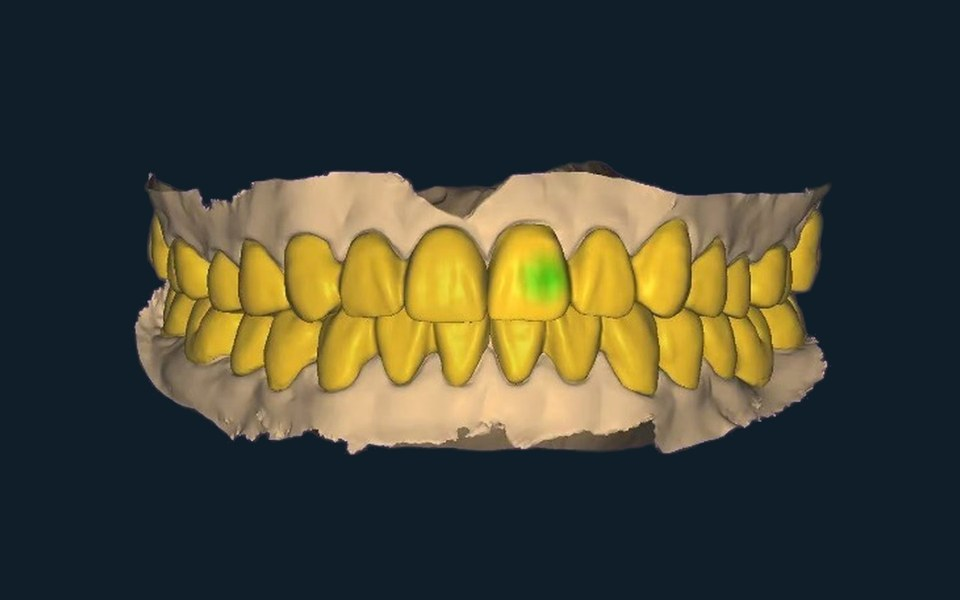
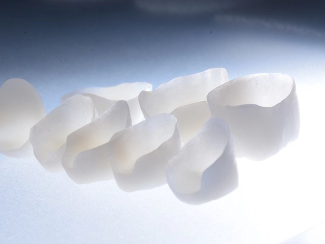

Rehabilitación full-mouth
Desgaste dental y cambios de DVO, planificados como una sola oclusión.
Tú envías el escaneado o tu propio diseño. Nosotros diseñamos, fresamos, maquillamos y glaseamos, y te devolvemos la restauración terminada con el nombre de tu laboratorio.

Precios netos en euros, sin IVA ni gastos de importación. Envío a precio de coste.
Fabricado en China. El trabajo sale con tu nombre y tus dentistas siguen siendo tuyos.

Circonio monolítico, diseñado por nuestro equipo o fabricado a partir de tu diseño.

Circonio maquillado individualmente, disilicato de litio e IPS e.max.

Circonio sobre Ti-base, atornilladas o cementadas.

Férulas Michigan de estabilización, férulas de reposicionamiento y desprogramadores anteriores, hechas según la mordida o la posición mandibular prescrita.
Primero se planifican contigo y luego los diseña y fabrica el mismo equipo.
Presupuesto por caso.

Desgaste dental y cambios de DVO, planificados como una sola oclusión.

De la guía y el provisional a la prótesis definitiva.

Planificación apoyada en imagen para rehabilitaciones en las que interviene la ATM.
Conocer AxisGuideEl escaneado o tu propio diseño, con material, color y fecha de entrega, por correo electrónico o WhatsApp.
Puedes revisar el diseño antes del fresado. La producción tarda 5–7 días laborables.
La restauración terminada llega a tu laboratorio por mensajería.
Envía un caso y juzga el resultado en tu propia mesa de trabajo.
Diseño, fresado, maquillaje y glaseado. Las Ti-base, el envío, los aranceles y los impuestos aparecen por separado en el presupuesto.
Se fabrican en China. La restauración sale con el nombre de tu laboratorio.
Sí. El trabajo de solo diseño (METALAB) está disponible bajo petición.